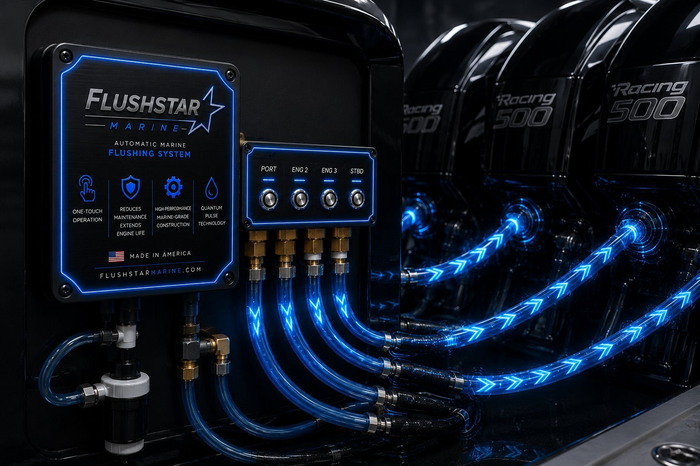
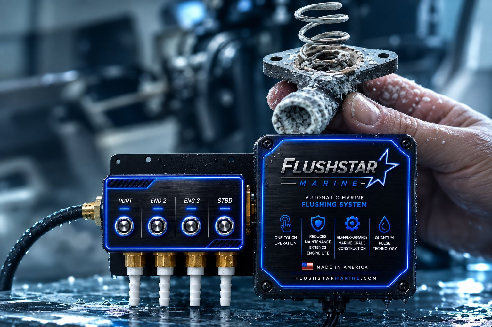

Salt never stops working.
Neither should you.
The Quantum 25 clears salt, sand and mineral buildup from your engine's full cooling circuit in one push-button cycle. No hose-holding. No ear muffs. No guesswork.

Flushing is a chore.
That's why it gets skipped.
Saltwater quietly wears down every cooling passage in your outboard. Here's what actually stops people doing it properly — and how the Quantum 25 removes each one.
01Standing there holding a hose
One-touch startup runs the full cycle automatically, so you're not stuck at the dock for twenty minutes babysitting a garden hose.
02Awkward engine access
The Quantum 25 connects to a standard flush port — no climbing over the transom to reach a factory plug or line up a set of ear muffs.
03No idea if it actually worked
Built-in diagnostics track total runtime and completed flush cycles, so you know the job got done right. Every time.
Three steps. Then walk away.
The boat can be in the water or on the trailer. The engine never has to run — which means no noise, no emissions and no fuel burned to protect your motors.
Connect freshwater
Hook a standard garden hose to the FlushStar inlet. The system is already plumbed to each engine's flush port, so there is nothing to align and nothing to guess at.
Press start
One button. The unit automatically detects engine type and opens the correct circuit for every motor in the bank — one through six.
Walk away
The cycle runs unattended and shuts itself down. Diagnostics log the runtime and the completed cycle count so you have a record, not a hope.
Built around your engine bank.
Single outboard or a bank of six, the Quantum 25 flushes them all from one manifold on one cycle. Pick your setup below to see how the system is laid out.
How many engines?
Select an engine count to configure the manifold.
- Engines
- 4
- Manifold ports
- 4 active
- Water source
- Garden hose
- Engine operation
- Not required
- Cycle status
- Standby
Flush your motors, not your time.
One-touch startup
Press once. The full cycle runs start to finish without you.
Built-in diagnostics
Tracks total runtime and completed flush cycles on board.
Auto engine detection
Identifies the engine type and opens the right circuit.
No engine operation
No running motor. No noise, no emissions, no fuel burned.
1 to 6 engines
One manifold, one cycle, however many motors you run.
In or out of the water
Works on the trailer, in the slip, on the lift.
12VDC plug & play
Runs off boat power. No extra programming to set up.
Made in America
Designed and built in the U.S.A. since 1988.

Denied claims start with salt.
Untreated saltwater exposure is one of the leading causes of denied outboard warranty claims. A consistent flush cycle is the cheapest insurance your engine will ever get — and the easiest one to actually keep up.
Get Your FlushStarThe short version.
- Engines supported
- 1 – 6
- Power
- 12VDC
- Installation
- Plug n Play
- Programming required
- None
- Water supply
- Standard garden hose
- Engine must run
- No
- Boat in or out of water
- Either
- Engine type detection
- Automatic
- Diagnostics
- Runtime + cycle count
- Emissions / noise
- None
- Country of manufacture
- U.S.A.
- Limited warranty
- 3 years
Real support. A straight guarantee.
Equipment built to handle saltwater, backed by people who pick up the phone.
Real people, real help
Call 850-250-2483 and we'll get back to you fast. No ticket queue, no phone tree.
Performance, promised
Try FlushStar with confidence. If it doesn't perform as promised, we'll make it right within 30 days.
Built for saltwater
Engineered to stand up to saltwater exposure and reduce corrosion-related engine damage. Covered for three years.
The smarter way to flush is here.
Tell us how many engines you run and we'll spec the right system for your boat.